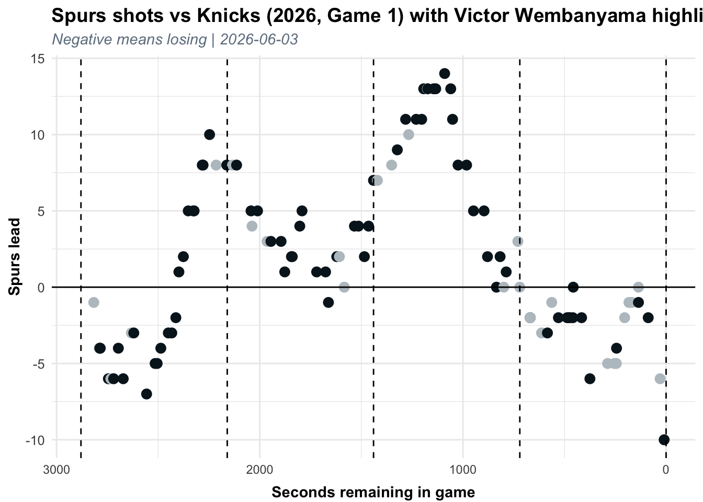
wemby
Joseph Settimi aka @wosephcantmiss on tiktok
Victor Wembanyama and his seemingly infinite ways to score the basketball provide an insane conundrum for defenses. Everybody knows that, obviously, but I think this conundrum might extend past his opponents, and also fall in the lap of himself and his teammates.
During games 1 and especially 2 of the 2026 Finals, it feels like Wemby’s status as an elite scorer on and off the ball disappears for minutes or quarters at a time. He is uninvolved in many possessions, being used as a prop to set screens with the occasional fake threat of a 30 foot pick n pop. These runs of uninvolvement usually end with forced shots when the Spurs find themselves minutes (not a coincidence) into a Knicks run.
I am going to vow not to bring up defense in this entire write-up. This is about the areas he needs to grow offensively, and the unique challenges his skills create for himself.
I wanted to be able to visualize this in hopes of letting the game script confirm what I believed to be true: he doesn’t hunt shots at the speed and game flow (not the frequency, those numbers check out) of regular offensive superstars. Below is a plot of games 1 and 2 plotted by the Spurs lead (negative for losing, inspired by The Diff™).
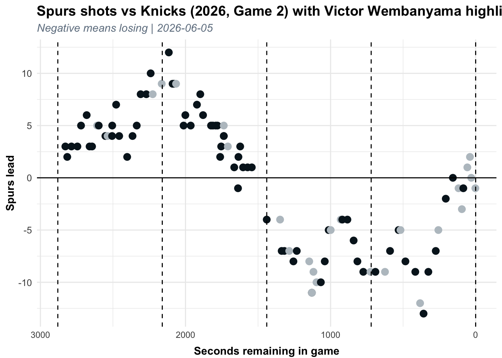
Notice those strange gaps that consistently appear, or what about when he suddenly decides to throw up a barrage of shots immediately after the Knicks take a long awaited lead (in both games!!). If the Spurs offense feels clunky and unnatural, it’s because his scoring has not come in-flow. Right now this isn’t about the type of shots that he takes (we’ll get there) but more so about the inconsistent and clustered nature at which he takes them. I am trying to put numbers and graphs to the unhealthy feeling that a lot of his games have had. Think of a normal superstar offensive game from Wemby - Game 1, western conference finals vs OKC.
This is his chart from that game.
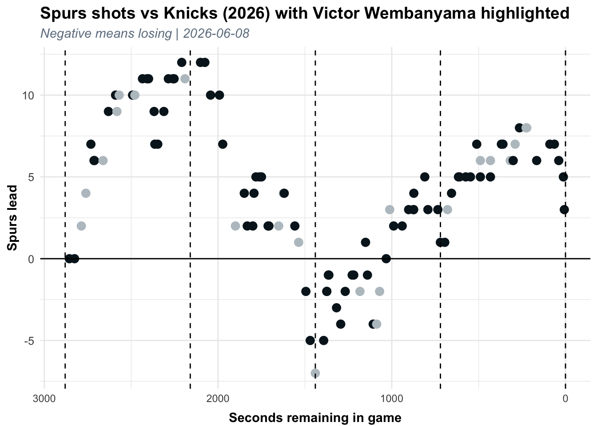
Note how much more evenly his shots are dispersed, the graph doesnt seem to care if the spurs are winning or losing, or where we are in the game, he just regularly (not too much or too little at any given point) gets shots up.
This is what I mean when I keep saying ‘in-flow’ without defining it. The offense moves clunkily because Wemby and his team at times forget that he isn’t a do-it-all role player that can pop in and out of offensive schemes on a whim, but the focal point of a championship offense.
So why does this happen?
Drew Gooden, a youtuber, not the former Washington Wizard, made a video about the ease with which people get overwhelmed by the choices in front of them. He thinks that in the streaming era, with every movie you could ever want at your fingertips, people actually watch less movies. They agonize for hours and hours, and end up watching that episode of The Office where Stanley has a heart attack. The more official term is Analysis Paralysis. Wemby, despite his monk trained super brain, can fall victim to this.
With virtually every conceivable move or method of scoring at his disposal, when tasked with taking on a defender he often seems paralyzed without a go-to move.
Many comparisons have oxymoronically been thrown around by people talking about someone they also call ‘The Alien,’ Dirk, KD, Skinny AD (my favorite comp), maybe aptly Tim Duncan. The problem is that his shot diet isn’t that close to any of them.
Through cosine similarity – which I wont explain in depth, just know it scores the similarities between vectors with 100 being a perfect match – I was able to match up the proportions at which selected players score (via the NBAs in depth scoring breakdown stats with data back to 2013) to Wemby. The 6 types of scoring being drives, catch n shoot, pull ups, post, paint and elbow touches. To be clear this is not measuring quality, just scoring method.
This is Wemby compared to some of these players as well as some all time elite scorers, albeit some past their primes. I tried to put many players in the years they played their first finals (just like our guy). Based on my understanding and tooling around with this function, anything below an 85 is not all that similar.
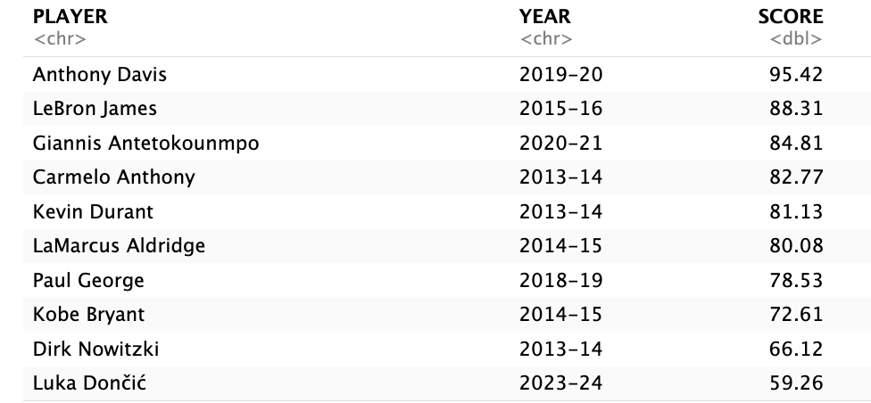
The next step I am going to take with my newly formed metric seems like a stray path but will make sense in due time. I am going to compare 2 distinct types of scorers to the rest of the league during this season: Jalen Brunson and Giannis Antetokounmpo.
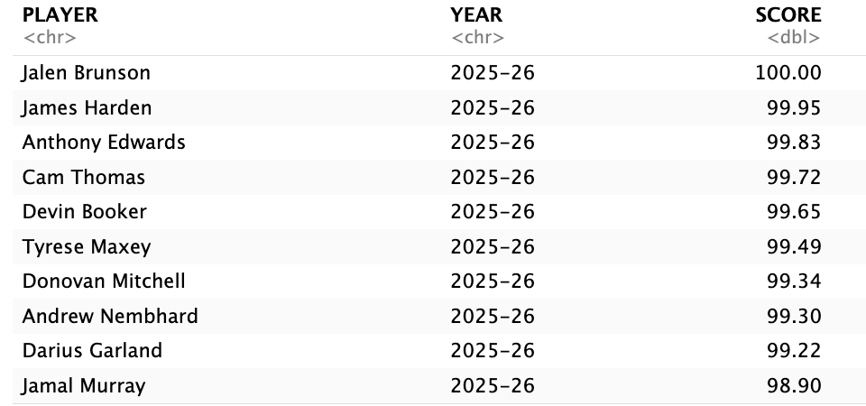
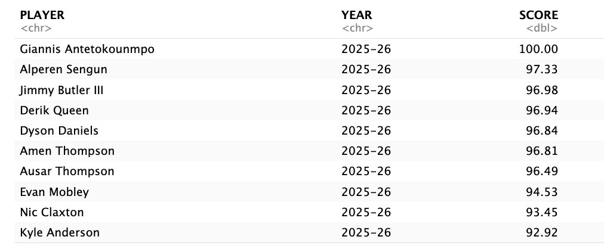
Notice how much these make sense intuitively. Brunson, most similar (all 98+) to the best on ball scoring guards in the league, with a mixed bag of step backs, pull ups, and drives. Giannis, with the exception of Sengun, has 5 of the best defenders in the league on his list, I know I swore I wouldn’t bring up defense, but I think it serves a cool offensive purpose of no-jumper, paint and drive dominant scorers, who also happen to be the best defenders in the league.
You know whose list doesn’t make any sort of intuitive sense? I bet you could guess.
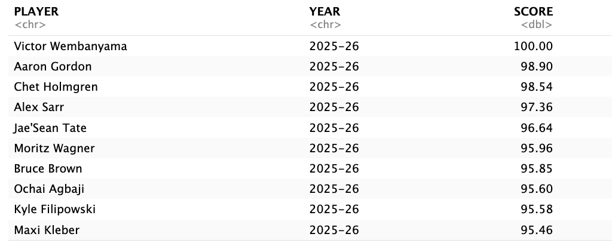
Well, Chet makes sense, Alex Sarr makes sense, two guys labeled as ‘Wemby stoppers’ which we can pretty much put to rest early, sorry Alex Sarr, but Chet speaks for both of you.
Those two may make sense, but the rest of the list… You’re telling me the 6th best offensive player in the league plays a similar style to the likes of Ochai Agbaji and Moe Wagner? The list is two small Wembys, super role player villain Aaron Gordon, and his cronies Jae’Sean Tate and Bruce Brown. What if I told you if you compare Wemby to any year since Aaron Gordon got drafted (2015+), that Aaron Gordon will be top 3 on the list. Lets talk more about Aaron Gordon.
Aaron Gordon, famous do-it-all offensive player, driving, shooting, pulling up, anything his guards Jokic and Murray needs him to do, he’ll do. The difference, though, is that Aaron Gordon, at the championship winning 30 years old that he is, knows exactly when to apply each of his scoring skills.
Do-it-all, every scoring type down pat, well, now Wemby’s list of scoring twins doesn’t seem so insane. It just might be as true as it sounds ridiculous that Wemby has the offensive behavior of a role player. Think about it, the sporadic scoring that suggests he only steps in when his team needs him, filling gaps between the true stars of the offense. Or, what about the ability to help in whatever way is needed: driving, shooting, posting up, but still not the experience to always know when to use what skill.
I’ll leave you with 3 players, all compared to Wemby, with both lead scorer and secondary scorer versions of themselves.
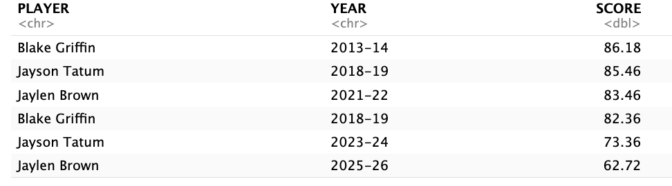
Every time, without fail, the secondary scorer version is more similar. With this year’s Jaylen brown being among the least comparable to Wemby that I scored.
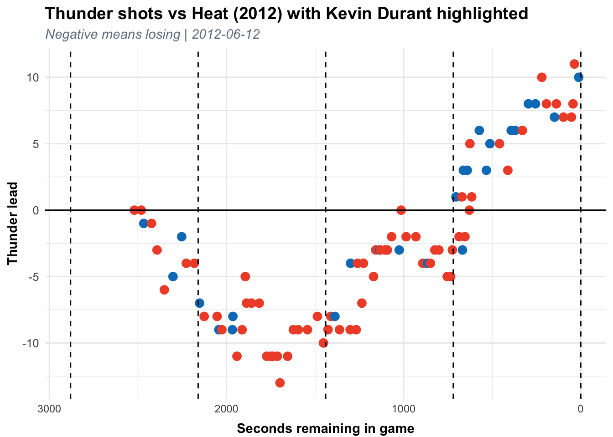
Wemby’s offensive ceiling is boundless, and every game is one he could erupt for 40 on the most important stage in basketball, but right now, and especially in these finals, he has more 5 tool role player in him than he does all time bucket getter.
Epilogue
Some more graphs to prove that it’s not just a weird center thing, and a blurb to prove that I swear I’m not trying to say Aaron Gordon and Kyle Filipowski are comparable scorers to Wembanyama.
Remember when Aaron Gordon was a hapless role player stuck in a star’s body and draft slot, the former top 4 pick in Orlando. But he found his home as Nikola Jokic’s henchman, Aaron Gordon has never been half the offensive player Wemby is, when he tried to shoulder anything close to Wemby’s volume (15 FGA in 2017 compared to Wemby’s 17 this year). He fell just shy of Wemby’s championship birth, at a record of 25 and 57.
Jokic and Embiid comparables for 2021
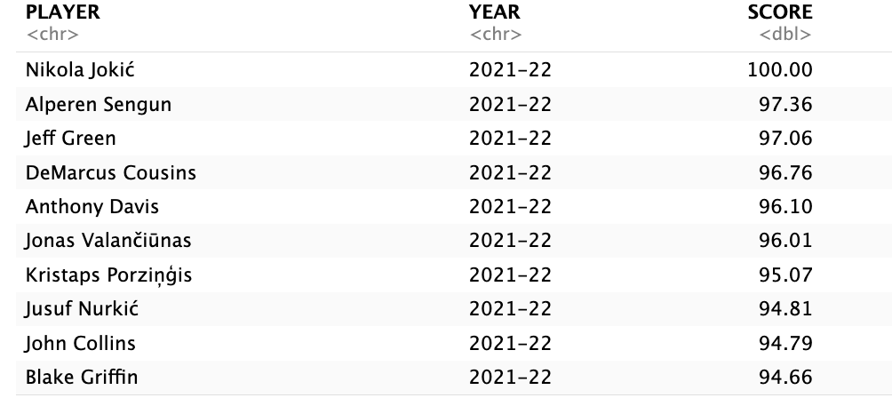
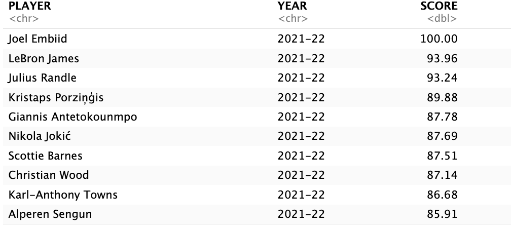
Also a KD graph from when he was 24 and led his team to the finals AFTER leading the league in scoring for the 3 years prior, because I didn’t talk about KD enough. Look at how evenly distributed those shots are.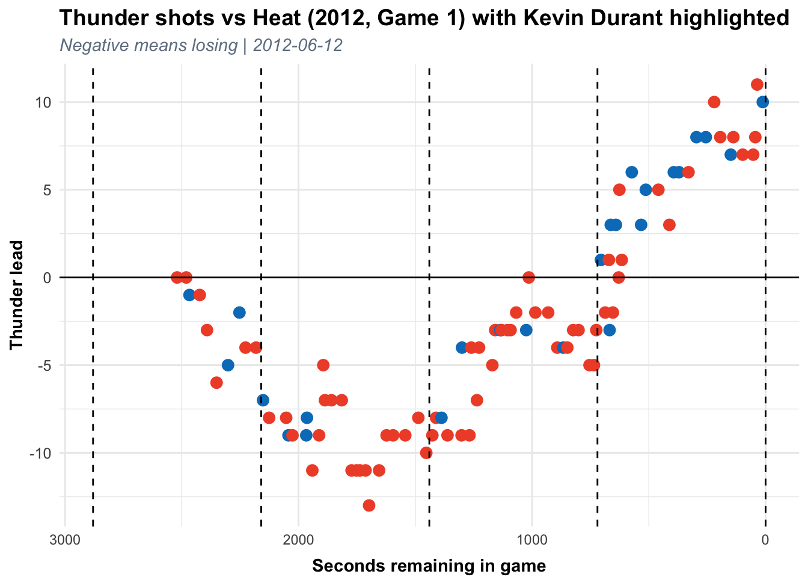